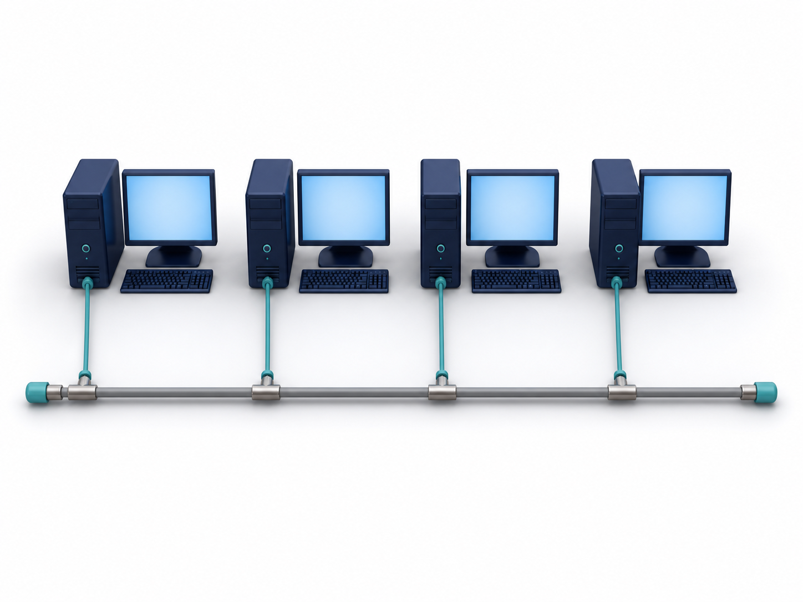
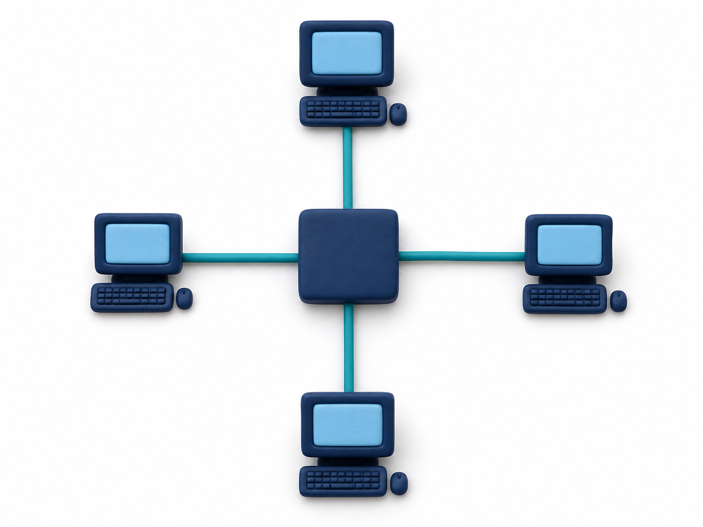
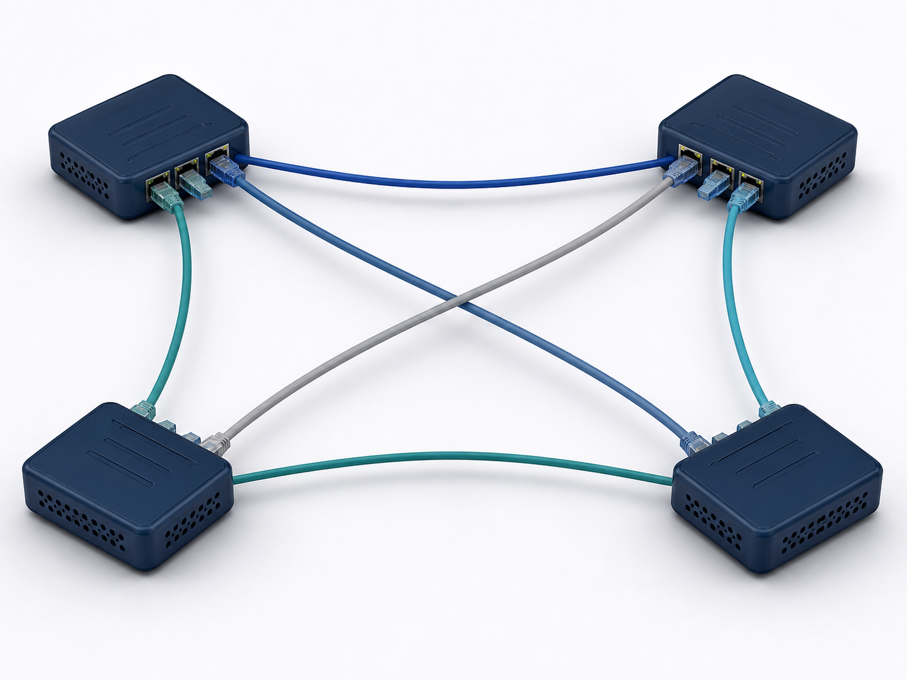
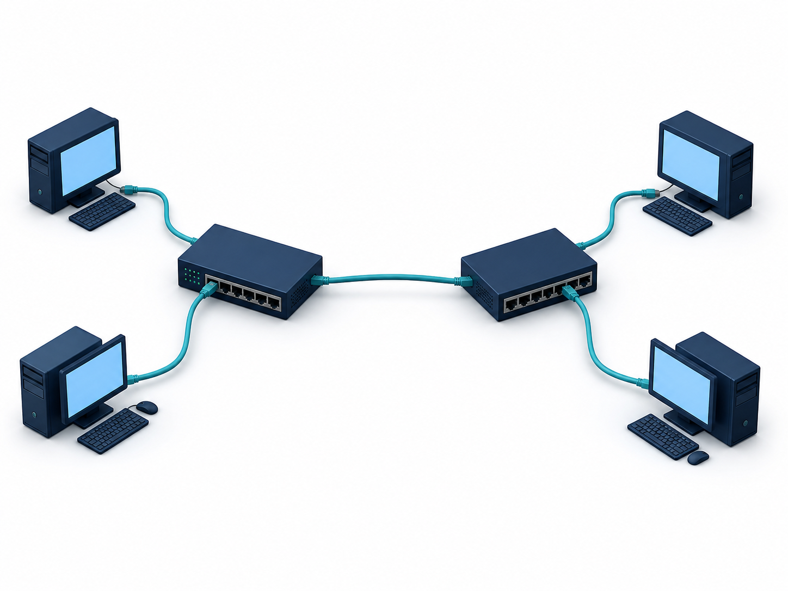
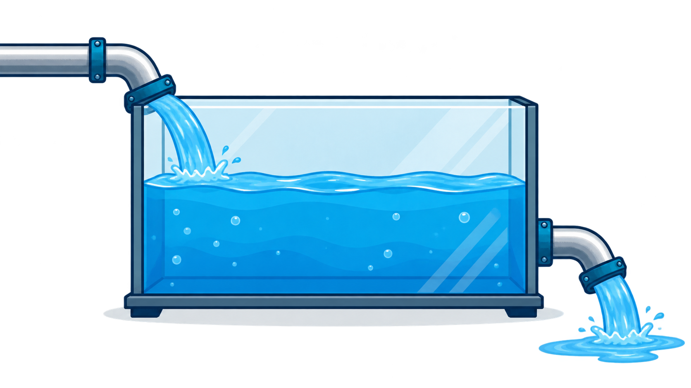

Client-server or peer-to-peer
Guiding question
A school needs controlled access to examination files, a network that does not collapse when one device cable breaks, and smooth video playback. How should its network work—and why?
- Which computers request resources, and which provide them?
- Which physical links does a frame use between two hosts?
- What happens when media arrives faster or slower than it is played?
Bus, star, mesh or hybrid
Incoming rate, buffer and playback
中文教师提示
先不要给定义。让学生分别回答“谁提供资源”“数据走哪条线”“来得比播放快或慢会怎样”。三问对应 model、topology、streaming，能阻止学生把这些概念混为一谈。
Knowledge explanation
S2.02 · comparison and justification
Client-server and peer-to-peer answer “who provides the resource?”
A network model describes computer roles. It is not a physical topology.
- The client requests a service or resource.
- The server controls access and provides the service.
- The response returns to the requesting client.
- A peer requests a resource directly from another peer.
- The providing peer must be online and sharing that resource.
- The same computer may later reverse roles.
Swipe horizontally to compare both models →
| Factor | Client-server | Peer-to-peer |
|---|---|---|
| Roles | Clients request; one or more servers provide and manage services. | Each peer may request and provide resources directly. |
| Management | Accounts, permissions, backups and updates can be controlled centrally. | Accounts, backups and security are managed across individual peers. |
| Cost | Dedicated server infrastructure and specialist administration add cost. | No dedicated server is required, so a small network can have lower initial cost. |
| Availability | A failed server or connection can interrupt every client that depends on that service. | A resource becomes unavailable when the peer providing it disconnects; other peers may still operate. |
| Suitable situation | A school examination room needing central accounts, permissions and backup. | A small trusted group sharing non-critical files directly. |
中文教师提示与易错点
先让学生用箭头说出 request 和 provide，再进入优缺点。不要接受“client-server 更安全”这种孤立结论；必须说明 central accounts、permissions 或 backup 如何带来控制，也必须承认服务器依赖和管理成本。
S2.04–S2.05 · structure, packet path and failure
A topology is the pattern of links—not the job of each computer
Read the physical model first, then trace the numbered path and connect each failure to the link or device that failed.

Trace the path
- The sender places the signal on the shared backbone.
- The signal propagates along that common cable.
- Attached devices inspect it; the addressed device accepts it.

Trace the path
- The source sends a frame along its own link to the switch.
- The switch reads the destination address.
- The switch forwards the frame along the destination's separate link.

Trace the path
- The source router examines the packet's destination.
- Routing information selects a direct or indirect route.
- If one link fails, a different connected route may remain.

Trace the path
- The source sends the frame to its local switch.
- The frame crosses the single inter-switch link.
- The remote switch forwards it to the destination computer.
Swipe horizontally to compare topology failure effects →
| Topology | If one end-device link fails | If shared or central equipment fails |
|---|---|---|
| Bus | One failed workstation does not necessarily stop the others. | A backbone break can divide or stop the network. |
| Star | Only that device is isolated; other device links can continue. | A failed central switch stops communication through that star. |
| Mesh | The effect depends on which node or link failed. | An alternative route may remain, but redundancy needs more links and ports. |
| Hybrid | A failed local cable normally isolates one device. | A failed switch affects its segment; a failed inter-switch link separates the two star segments. |
中文教师提示与易错点
先让学生在实体模型图中数设备和连接，再用编号步骤口述 packet path。不要在图上画一条“穿过交换机”的长线；那会看起来像 device-to-device direct link。尤其强调：peer-to-peer 是角色模型，mesh 是连线结构；hybrid 必须指出组合了哪些 topology，不能只说“复杂的大网络”。
S2.12 · analogy plus exact rate relationship
A buffer is temporary stored data, not extra broadband speed
The reservoir builds intuition; the rate table states the technical rule.
Swipe horizontally to inspect all three labels →

Read the level from the two rates
More data enters each second than playback consumes.
Over time, the same amount enters and leaves.
If the deficit continues, playback eventually pauses or quality must fall.
Swipe horizontally to compare both streaming methods →
| Method | Where the content comes from | Timing |
|---|---|---|
| Real-time | Content is being produced now, such as a live event. | Sent as it is produced, with minimal practical delay. |
| On-demand | Content is already stored on a server. | The user chooses when to stream it. |
中文教师提示与易错点
把 incoming rate 看成进水、playback bit rate 看成出水、buffer level 看成水位。短暂进水变慢时，原有水量还能维持播放；如果长期进水小于出水，水池最终一定见底。不要说“buffer 提高网速”。
Practice
Answer before opening the marking guidance. Each question maps to one of the diagrams above.
retrieval → application → explanationState2 marks · S2.02
State the role of a client and the role of a server.
Show answer and marking guidance
- A client requests a service or resource. [1]
- A server provides or manages that service or resource. [1]
Justify4 marks · S2.02
A school examination room needs centrally controlled accounts, software and file access. Justify using a client-server model, including one drawback.
Show answer and marking guidance
- Accounts and permissions can be managed centrally. [1]
- This allows consistent restricted access to examination files. [1]
- Software or backups can be managed centrally. [1]
- The room depends on server/network availability, or requires costly server administration. [1]
Explain3 marks · S2.04–S2.05
Explain how a frame travels between two hosts in a star topology and what happens if one host cable fails.
Show answer and marking guidance
- The source sends the frame to the central switch. [1]
- The switch forwards it through the link to the addressed destination. [1]
- A failed host cable isolates that host; other device links can continue operating. [1]
Apply4 marks · S2.12
A stream plays at 6 Mbit/s. It arrives at 9 Mbit/s for a short time, then at 4 Mbit/s for an extended time. Explain what happens to the buffer in both periods and why playback cannot continue indefinitely at 4 Mbit/s.
Show answer and marking guidance
- At 9 Mbit/s, incoming rate exceeds playback rate, so the buffer fills. [1]
- The stored data can absorb a later short reduction in incoming rate. [1]
- At 4 Mbit/s, playback consumes 2 Mbit/s more than arrives, so the buffer drains. [1]
- If that deficit continues, the buffer becomes empty and playback pauses or the player must reduce bit rate. [1]
中文教师提示
练习顺序刻意从 role recall 走到 scenario justification，再走到 packet path 和 rate reasoning。不要在学生作答前展开答案；要求每个 explain/justify 点写出“机制 → 后果”。
Past-paper analysis
Source index: 9618/11/M/J/24 Q2(e)(i)–(ii), 3 marks. The original Cambridge wording and mark scheme are not reproduced. Open the official Cambridge question paper.
Equivalent task
A school broadcasts an assembly live and stores the recording so students can watch it later. State what bit streaming means, then give two differences between the live stream and the stored on-demand stream.
Build the answer
- Define bit streaming as a continuous, ordered flow of bits along a communication path.
- Contrast the source: the live stream comes directly from an event; the on-demand stream comes from stored content.
- Add a user-control difference: stored content can be selected and revisited later; live content follows the event as it happens.
Why the marks are earned
- The definition contains continuous, ordered flow and a communication path. [1]
- The first difference contrasts live production with stored content. [1]
- The second difference contrasts later selection or replay with following the live event. [1]
Common losing answers
- “Streaming means watching a video online.”
- “Real-time means there is no delay at all.”
- Giving two versions of the same source/timing difference.
- Describing downloading a complete file instead of an ordered flow.
中文教师提示
解析不是把答案展示出来，而是让学生看到每个 mark 对应一个独立因果点。课堂上可以先遮住 “Why the marks are earned”，让学生把四步与四分自行配对。
Summary
Client-server separates requesting clients from providing servers. Peers may perform both roles.
Trace the actual packet path, then connect link or device failure to the scenario.
Incoming above playback fills the buffer; incoming below playback drains it.
中文教师提示
收尾时只问三个判断：谁提供、走哪条线、哪个速率更大。学生能脱离图解准确说出这三件事，素材才真正完成了教学任务。